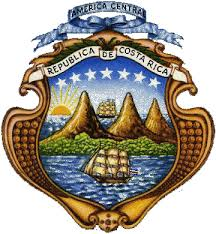
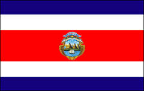
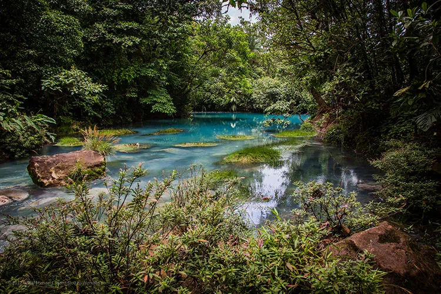
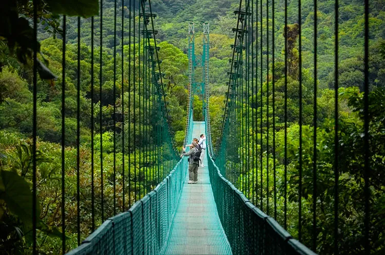
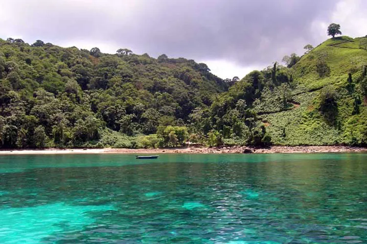
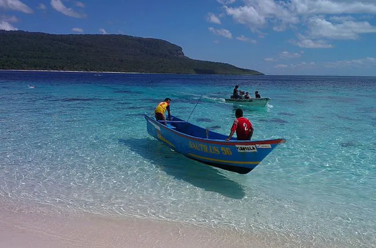

Historia
Según la historia, Cristóbal Colón desembarcó en una pequeña isla situada por Limón en 1502, y fue
así como “descubrió” Costa Rica. Bueno, eso es lo que dice la historia española, pero no es en
realidad lo que sucedió en este episodio de la historia de Costa Rica. En 1502, Cristóbal Colón
desembarcó un poco perdido en Limón. ¡Y Costa Rica lo descubrió! Costa Rica ya existía. Costa Rica
descubrió a los europeos en 1502! Limón se convirtió en el primer asentamiento español en la región,
y en 1522 los colonos nombraron la tierra Costa Rica. Todo con la esperanza de que iban a encontrar
oro en sus colinas, pero no lo hicieron. Cuando se hizo evidente que la costa rica era más pobre que
sus vecinos, los colonos cambiaron su enfoque al desarrollo agrícola.
Como los terratenientes eran bastante pobres y aislados de los centros coloniales españoles de
México, Guatemala y los Andes, y porque había muy poca mano de obra indígena para ayudar, los
primeros colonos costarricenses pronto se convirtieron en una sociedad agraria autónoma e
individual. A principios del siglo XIX, el cultivo de los plátanos trajo mucha riqueza, y el café
pronto siguió los pasos.
Día de la Independencia es una parte importante de Costa Rica Historia. El 15 de septiembre de 1821,
después de la guerra por la independencia de México, las autoridades de Guatemala declararon la
independencia de todas las provincias de Centroamérica. Hoy en día, del Día de la Independencia
todavía se celebra el 15 de septiembre.Aunque técnicamente, bajo la Constitución española de 1812,
luego adoptada en 1820, Costa Rica y Nicaragua se habían convertido en una gran provincia autónoma
con León como capital. Luego, en 1838, Costa Rica se declaró soberana.
Estos eventos seguidos de una era de paz y prosperidad. Hasta 1917, cuando el General Federico
Tinoco Granados gobernó como un dictador militar durante dos años. Más tarde, en 1948, Jose Figueres
inició una guerra civil en la que murieron 2.000 personas; la guerra sólo duró 44 días y fue el
evento más sangriento jamás a tener lugar en Costa Rica. La junta victorioso, sin embargo, dio lugar
a una constitución que dio paso a elecciones libres por sufragio universal y la abolición total del
ejército. Figueres se convirtió en un héroe nacional cuando Costa Rica disolvió su ejército en 1949.
Desde ese día, Costa Rica ha tenido 16 elecciones presidenciales democráticas.
Simbolos patrios
Escudo nacional
El Escudo Nacional representa tres volcanes y un extenso valle entre dos océanos y en cada uno de éstos
un buque mercante. En el extremo izquierdo de la línea superior que marca el horizonte habrá un sol
naciente. Cerrarán el escudo dos palmas de mirto, unidas por una cinta ancha color blanco y contendrá en
letras doradas la leyenda: "República de Costa Rica". El espacio entre el perfil de los volcanes y las
palmas de mirto lo ocuparán siete estrellas de igual magnitud, colocadas en arco que representarán las
provincias de San José, Alajuela, Cartago, Heredia, Guanacaste, Puntarenas y Limón.

Bandera actual
La cuarta bandera o actual, fue decretada por la administración del Doctor José María Castro Madriz, se
ha dicho que la opinión de Pacífica Fernández, esposa de éste, fue determinante en escoger los colores y
que en ella influyó, su admiración por la cultura francesa. Fue decretada en septiembre de 1848. Está
formada por cinco franjas horizontales: la primera y la quinta de color azul, la segunda y la cuarta,
blancas y una franja roja en el centro, cuyo ancho es dos veces mayor que las demás.

Himno Nacional
Noble patria, tu hermosa bandera
expresión de tu vida nos da;
bajo el límpido azul de tu cielo
blanca y pura descansa la paz.
En la lucha tenaz,
de fecunda labor
que enrojece del hombre la faz,
conquistaron tus hijos
labriegos sencillos
eterno prestigio, estima y honor.
¡Salve, oh tierra gentil!
¡Salve, oh madre de amor!
Cuando alguno pretenda
tu gloria manchar,
verás a tu pueblo valiente y viril,
la tosca herramienta en arma trocar.
Salve oh Patria tú pródigo suelo,
dulce abrigo y sustento nos da;
bajo el límpido azul de tu cielo
¡vivan siempre el trabajo y la paz!
Letra: José María Zeledón
Música: Manuel María Gutiérrez.
Extensión territorial
51,180 km²
Lista de provincias
- San José
- Alajuela
- Cartago
- Heredia
- Guanacaste
- Puntarenas
- Limón
Lugares turísticos mas importantes
1. Rio Celeste
Situado dentro del Parque Nacional Volcán Tenorio, en la provincia de Alajuela, corresponde a un río de
aguas termales, que debe su fama a las intensas tonalidades turquesas de sus aguas, resultantes de un
fenómeno óptico dado por la dispersión de la luz solar y la alta concentración de silicatos de aluminio.
El recorrido por el río, está rodeado de atractivos turísticos, pasando por cascadas, lagunas y
miradores, además de ofrecer espectaculares vistas al volcán Tenorio y al exuberante bosque tropical que
se encuentra en sus entornos.

2. La Fortuna
Esta pequeña localidad situada en la provincia de Alajuela, corresponde a uno de los principales lugares
turísticos de Costa Rica para entusiastas del ecoturismo, famosa por la amplia diversidad de actividades
de contacto con la naturaleza que permiten sus entornos de bosques y ríos.
Entre su oferta turística figuran opciones de aguas termales, canopy, rafting, observación de aves y
senderismo. Además La Fortuna es la puerta de entrada al Parque Nacional Volcán Arenal, hogar del famoso
volcán del mismo nombre, el más activo del país, emitiendo de forma constante gases y vapores de agua.

3. Reserva Biológica Bosque Nuboso Monteverde
Otra de las maravillas naturales, que no podría quedar fuera de ningún ranking de los mejores lugares
turísticos de Costa Rica, corresponde a esta inmensa reserva biológica situada en la provincia de
Puntarenas, la cual extendiéndose por 10 000 hectáreas, da protección a los bosques nubosos de la Sierra
de Tilarán.
Uno de los principales atractivos de la reserva, es su amplia ruta de senderos, los cuales permiten
internarse con relativa facilidad, a través de los exóticos paisajes que ofrecen los bosques nubosos,
donde la niebla se concentra a la altura de la vegetación. Además esta reserva, es uno de los mejores
destinos de Costa Rica para el avistamiento de aves, siendo el gran protagonista el majestuoso quetzal.

4. Parque Nacional Isla del Coco
Parte de la provincia de Puntarenas, esta isla y parque nacional de 99 725 hectáreas en el Pacífico, es
hogar de impresionantes escenarios naturales, con bosques húmedos tropicales, enormes cascadas, playas
de aguas turquesas, cavernas acuáticas y acantilados que superan los 180 metros de altura.
Declarada Patrimonio de la Humanidad por la UNESCO, esta paradisiaca isla también es famosa por sus
impresionantes fondos marinos, considerados entre los mejores del planeta para practicar buceo, dada la
transparencia de las aguas y la facilidad de encuentro con grandes animales marinos, tales como
ballenas, tiburones, manta rayas gigantes y delfines azules.

5. Jacó
Esta pequeña ciudad costera en la provincia de Puntarenas, corresponde a uno de los más visitados lugares
turísticos de Costa Rica dado su cercanía con la capital San José, hogar de una playa de aproximadamente
4 kilómetros de largo, donde se concentran algunos de los mejores puntos de surf del país.
Jacó concentra una animada oferta de vida nocturna, restaurantes y actividades recreativas, como los son
paseos en cuadriciclo, kayak, rafting, safaris, paseos a caballo, y surf. En sus cercanías, se puede
disfrutar de privilegiados puntos de contacto con la naturaleza, como lo son el Parque Nacional Carara,
el Parque Nacional Manuel Antonio o el Refugio Nacional de Vida Silvestre Playa Hermosa.
